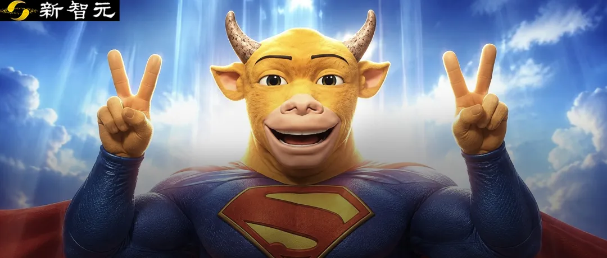
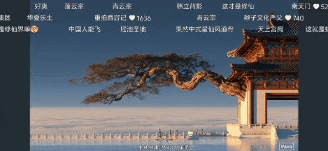
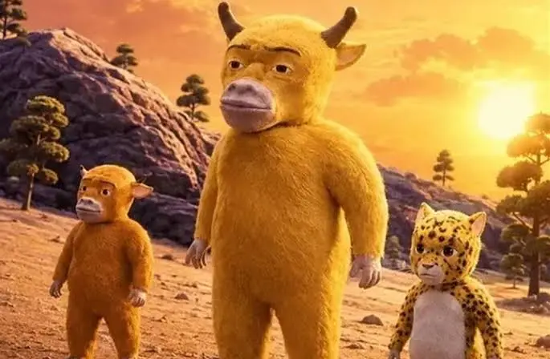
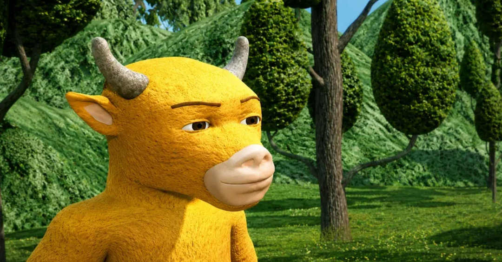
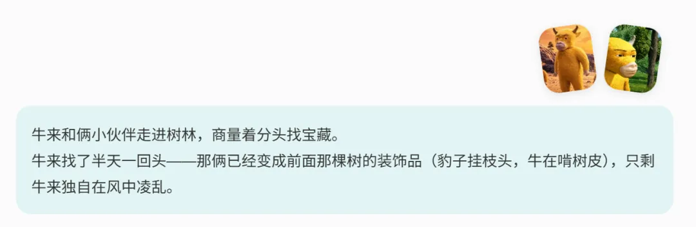
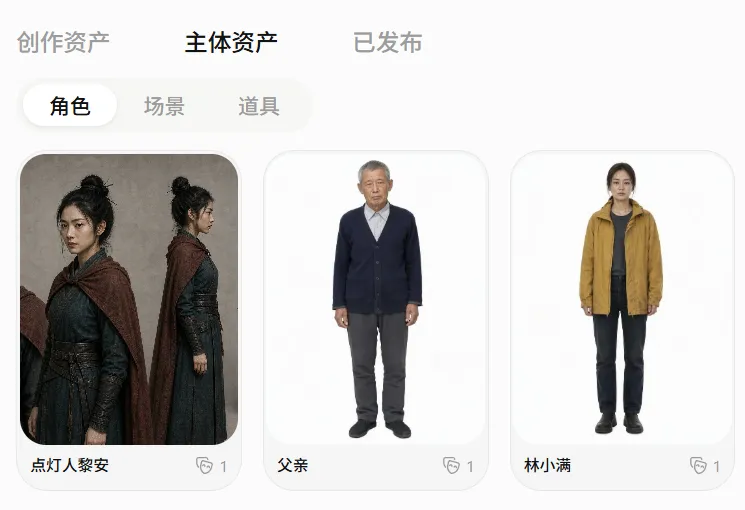
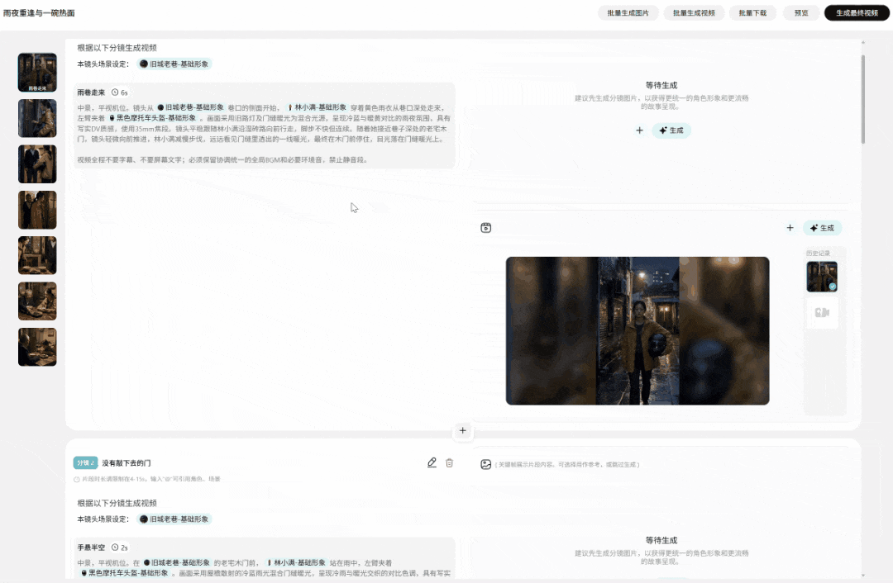

新智元报道
新智元报道

最近，AI短剧的风刮遍了所有平台。
各种疯狂吸金的AI短剧和漫剧，是数不胜数，更不用提最近火爆的现场级神作《云上天宫》了。

「云上天宫」的作者，正是使用Pavo制作出了现象级的大爆视频
可是，当自己真正想要上手，用AI做出个爆款视频，却发现抽卡太贵、一致性太差、工作流稀碎，仿佛在抽盲盒。
高频AI视频创作者，如今最大的痛点是——AI生成一部完整视频的成本，到底能不能承受？
就在刚刚，一个重磅消息来了——
Agnes Video 2.5系列模型，正式上线Pavo平台！
这个工具，绝对足以终结AI短剧赛道的高成本。
普通人做AI短视频和AI短剧的门槛，直接原地打到「骨折」。
最近，极度粗糙的荒诞画风，纯手搓建模的纯度，已经让《牛来》火到了国外，成为老外眼里的「人类艺术之光」。
等不及的我们，立刻去Pavo平台上手搓了一把。
我们给Agnes Video 2.5一个首帧，一个尾帧，让它生成一段视频。
 |  |

出来的效果，就是让我们笑到满地找头，这无厘头的画风，跟原作真是十分契合了。

为何Agnes Video 2.5效果这么好？榜单分数说话。
在AA盲测榜单中，Agnes Video的Elo评分从2.0的917提升至2.5的1082，已经进入主流商业视频模型的竞争区间。
更重要的是，Agnes Video 2.5的API参考价格仅为1.5美元/分钟，在同档模型中仍然保持着明显的成本优势。
榜单地址：https://artificialanalysis.ai/video/leaderboard/text-to-video
它在画面质感、人物动作的自然度、运镜的平滑感、复杂场景的物理逻辑上，都进行了大幅度优化。
无论是唯美的古风短剧、赛博朋克的科幻短片，还是高逼格的商业广告，它的成片质量都没得说。

具体到使用上，Flash版本的免费规则非常直接：
输入：免费版支持五张以内图片输入参考，支持音频输入。
画质与时长：720p分辨率，单次支持生成4-12秒！
速率：3RPM，日常抽卡完全够用。
从此，做AI视频时，再也不用每生成一个镜头都肉疼了。
你可以用Flash版本进行大量的前期预演、镜头测试、风格探索和批量分镜验证。提示词不对，构图不好，都可以多次测试，直到最终效果满意为止。
经过反复调试，我们成功生成了这版仙侠剧中的场景。
如果对画质有更高要求，那么Agnes-Video-2.5标准版就是你的首选。
虽然不免费，但Pavo每天都会给用户赠送200免费体验积分。
以每秒消耗2积分计算，你每天可以免费生成最高100秒的高质量视频。
实际创作时，完全可以用免费的Flash探路，再用每天白嫖的2.5标准版出成片，这套组合拳，简直是性价比拉满。
下面就是用Agnes-Video-2.5生成的效果。
比如2005年前后的中国电视选秀节目现场，还原度非常逼真。
真人画风的校园题材AI短剧，剧情充满张力，让人理解了为什么最近这么多人入坑AI短剧。
但当创作从单个Demo进入几十甚至上百个镜头时，真正让人头疼的，就不只是生成效果了。
素材怎么管理？人物怎么保持一致？某个镜头翻车了，难道整条片子都要推倒重来？
这时候，Pavo的「无限画布」就派上用场了。
在画布上，文本、图片和视频都可以变成一个个节点。
从剧本、角色图到首尾帧视频，都能在同一个空间里继续生成。
图片和视频生成还提供了2D、3D、真人等不同风格，可以根据作品类型直接选择。
这一次，我们直接用它做了一支奇幻短片《最后一盏灯》。
故事里，整座城市突然熄灭。年轻点灯人带着最后一点火光登上天文台，重新启动浑天仪，让城市迎来黎明。
我们先将点灯人、八角铜灯、运河城和天文台保存为主体资产。后续生成新画面时，可以直接调用，不需要重复上传和描述。

上下滑动查看
随后，故事被拆成城市熄灯、奔向石阶、进入天文台、安装铜灯和全城复明等连续画面，全部铺在同一张画布上。
相邻两张图片分别作为首帧和尾帧，再交给Agnes Video 2.5补出中间的动作和运镜。
巧妙的是，一旦某个画面出现问题，并不需要全部重来。
比如在结尾，我们没有直接让整座城市瞬间亮起，而是从「铜灯装入浑天仪」这个节点继续延展：先让金色光线逐圈点亮机械铜环，再切到日出下全城复明的远景。
不同画面和生成版本都会保留在画布上，可以随时对比和调整。最后只需要把选中的节点接回主线，前面已经完成的镜头完全不用重做。
如果需要进一步控制人物站位、姿势和特殊机位，还可以使用3D导演台，提前完成镜头预演，减少只靠提示词带来的随机性。
一条路线不满意，就拉出新的分支；哪一帧出现问题，就从哪一帧继续修改。
最终，我们把这些镜头连接成了完整的《最后一盏灯》。
少抽几次卡，少推倒几次重来。
无限画布降低的，不只是生成价格，更是完整作品里的返工成本。
如果你说：「我连剧本都不会写，分镜也不懂，怎么做短剧？」
别慌，Pavo基于自研Harness框架打造的「AI短剧/剧情短片模式」，就是为你量身定制的！
你只需上传剧本，或者用自然语言描述一个故事想法。剩下的，可以全部交给Pavo的Agent！
它会帮你自动完成一条龙服务——
故事创意→撰写剧本→设定人物与场景→设计分镜图→生成图片素材→转化为视频镜头→最终成片！
接下来，我们把一个父女重逢的故事交给Pavo，让Agent从人物设定、剧情拆解和分镜设计，一路推进到最终成片。
Pavo首先梳理了人物关系、情绪转折和场景推进，并生成完整的剧本大纲。
故事并不复杂。
一场大雨，一扇三年没有敲开的家门，还有两碗早已盛好的热面。
女主林小满是一名31岁的外卖骑手。三年前，她和父亲大吵一架，带着行李离开了家。此后父女俩谁也没有先低头，偶尔打来的电话，也总是在接通前被挂断。
这天晚上，小满结束工作后，鬼使神差地骑回了那条熟悉的老巷。
围绕这条故事线，Pavo将剧情拆解为雨夜归来、门前犹豫、父女重逢、跨进家门、同桌吃饭和关系和解等连续段落，并开始生成父亲、女儿和老屋的主体资产。
小满始终穿着黄色防水外套、扎着低马尾，手里拿着那只黑色头盔；父亲则保持花白短发、藏蓝色旧针织衫和略显佝偻的体态。
这些细节看似普通，却决定了短剧能不能成立。
因为观众必须相信，雨中的女骑手和饭桌前的女儿是同一个人，门口沉默的老人和给她推来热面的父亲，也必须是同一个人。
主体资产确定后，Pavo继续把剧情转化为具体分镜：雨巷中的远景负责交代环境，门前的中景表现犹豫，开门后的正反打呈现父女重逢，最后再用饭桌近景收住情绪。
每个分镜都可以继续生成图片和视频。某个镜头出现问题，也可以单独修改对应画面，而不用从头重做整部短剧。

最终生成的后半段，没有安排大哭、拥抱或声嘶力竭的道歉。
父亲只是默默看着，小满则捧起那碗已经准备好的面，低头吃下第一口。
吃完后，她放下筷子，终于看向父亲：
爸，我明天还来。
父亲停顿了一下，轻轻点头：
饭，还是这个点。
故事到这里结束。
窗外的雨还在下，桌上的两碗面仍然冒着热气。父女俩没有说出那句迟到了三年的道歉，但观众已经知道，他们之间那道关着门，终于重新打开了。
值得注意的是，本次短剧实测全部使用Pavo每日赠送的积分完成，没有产生额外付费。
可见，相比于传统短剧制作动辄几十万的成本和庞大的团队，Pavo实现了真正的低门槛、低成本、连续创作。
这种极致性价比，自然吸引来不少用户。在Pavo平台上，不少用户已经生成非常惊艳的短剧了。
比如车祸失忆后，女主遇到了美男老公的故事。
穿进了乙游里，不小心成了恶毒女配，悬念拉满。
短剧怎么少得了龙王系列？《龙王归来之至尊战神》，这不就来了。
用皮克斯式的爆笑动画，怎么演绎《三国》中的「三顾茅庐」情节？这个2分钟的短剧，效果实在惊艳。
看完上面的实测，你一定会为这套组合拳所折服。
高能力模型（Agnes 2.5）负责拔高你的作品上限。
免费策略（Flash版+每日积分）负责打下你的试错成本。
而Pavo平台（无限画布+短剧Agent）则把这一切串联成了高效、可控的工业化生产线。
可以说，这是短剧赛道、AI自媒体赛道的一次重新洗牌。
过去，因为高昂的成本，很多人倒在了完整作品的半路上。
而现在，Pavo直接把工具免费塞到你手里，让你充分发挥自己的导演才华。
还在等什么？现在就去体验吧！
Pavo产品入口，戳这里立刻开始你的导演梦：https://app.pavo-ai.cn/。
编辑：摩西 Aeneas